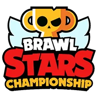

How is the Brawl Stars championship going?
Step 1
CHAMPIONSHIP CHALLENGE
Start by playing in this monthly in-game event. Get to 15 wins before 4 losses to qualify - playing with
friends will improve your chances!

Step 2
CREATE OR JOIN A TEAM
Once qualified, you will be added to the BSC Discord server - now is the time to create or join a persistent
team within your region for the Monthly Qualifier!
Step 3
MONTHLY QUALIFIER
Teams compete in an in-game Qualifier tournament. The top teams from each sub-region will advance to their
respective Monthly Finals.
Step 4
MONTHLY FINALS
The Top 8 Teams compete in a 1 day single elimination tournament, and the winner will be crowned the Monthly
Champion! The Monthly Finals are broadcasted live.
Step 5
LAST CHANCE QUALIFIER
12 teams representing all regions are invited to the Last Chance Qualifier, played face-to-face to secure
the final FOUR qualification spots for the Brawl Stars World Finals.
Step 6
BONUS SEASON
Introducing an online season with a different and fun format! The Bonus Season does not offer any progress
towards World Finals.
BONUS SEASON
Introducing an online season with a different and fun format! The Bonus Season does not offer any progress
towards World Finals.